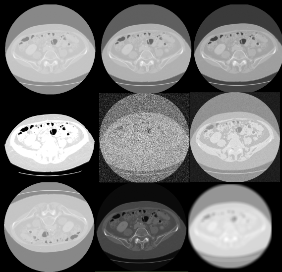

GSoC ’24: Adding dataset-wide functions and integrations of augmentations
📝🩻📎📉 ➡️ 🗃️📚♻️🧑🏫 ➡️ 🤖👁️📈 ➡️ ❤️🩹
These emoticons may resemble hieroglyphics, but very soon you will realize that they mean more than 1000s of lines of code.
Description of the emojis used in the title
- 📝 Action Plan: A clear, structured plan that guides the setup and configuration of the MedPipe3D pipeline.
- 🩻 3D Medical Images: Medical imaging data, such as MRI scans, to be processed and analyzed by the AI model.
- 📎 AI Model: The initial AI model or architecture that will be trained and refined within the pipeline.
- 📉 Loss Function: A function that measures the model’s performance during training, guiding the optimization process.
- 🗃️ Data Loading: Loading raw data into the pipeline for further processing.
- 📚 Data Splitting: Dividing data into training, validation, and test sets to prepare for model training and evaluation.
- ♻️ Data Augmentation: Increasing data variability through augmentation, enhancing the model’s generalization capabilities.
- 🧑🏫 AI Training: Using the processed data to train the AI model, improving its accuracy and performance.
- 🤖 Model: The trained AI model that can perform tasks such as segmentation on medical images.
- 👁️ Data for Visualization: Output data, such as masks and segmentations, which can be interpreted directly on medical scans.
- 📈 Performance Logs: Logs and metrics documenting the AI’s performance, ready for further analysis in tools like MedEval3D and MedEye3D.
- ❤️🩹 Purpose of MedPipe3D: The goal is to create AI tools that assist healthcare professionals in making faster, more accurate decisions, ultimately helping save lives.
In this post, I’d like to summarize what I did this summer and everything I learned along the way, rebuilding MedPipe3D medical imaging pipeline. I will not start typically, but so that anyone even a novice can visualize what this project has achieved, while the latter part is intended for more experienced readers. It will be easiest to divide it into 4 steps separated by ➡️ in the title above. Each emoji stands for a different piece of pipeliner and will be described below.
📝🩻📎📉 What we need from the user
MedPipe3D requires four essential inputs from user to get started: a clear action plan 📝, 3D medical images like MRI scans 🩻, an AI model 📎, and a loss function 📉.
🗃️📚♻️🧑🏫 The Pipeline essential AI manufacturing line
Following the plan 📝, MedPipe3D loads data, pre-processes and organizes it 🗃️. Allowing data to be easily split 📚, efficiently augmented ♻️ in many ways for learning AI 🧑🏫 model effectively. In the end performing testing and post processing for better determination of AI skills.
It’s designed to transform raw medical data into a format that your AI can learn from, segmenting meaningful patterns and structures.
🤖👁️📈 Results and Insights
MedPipe3D is a tool for researchers and for that it cannot do without analysis, testing and evaluation. The result of the pipeline is a model 🤖 as well as data 👁️ and logs 📈 needed in MedEval3D that are ready for visualization and further analysis with MedEye3D. In a nutshell, it makes visualizing results easy-showing, tumor locations or other medical features directly as masks on the scans.
❤️🩹 Purpose-Driven Technology
MedPipe3D’s mission goes beyond technology. It’s about providing the tools to create AIs that support healthcare professionals in making faster, more accurate decisions, with the ultimate goal of saving lives.
This four-part journey captures the heart of MedPipe3D toolkit for advancing medical AI, from raw data to life-saving insight.
Introduction
MedPipe3D is a framework created from hundreds of hours over summer vacation, thousands of lines of code, hundreds mistakes and most importantly the guidance of my mentor and author of all of these libraries Dr. Jakub Mitura. At its core, MedPipe3D combines sophisticated data handling from MedImage thanks to the hard work of Divyansh Goyal. Newly developed pipeline for model training, validation and testing with existing MedEval3D, and result visualization with MedEye3D. Unfortunately, not all the project’s goals have been fully achieved, and thereby there is one section ➡️ too many. Hopefully not for long. My name is Jan Zubik, and I wrote this entire library from scratch, which is currently my most complex project.
If you are a data scientist, programmer, code enthusiast, I invite you to read the next section where I go into detail and present version 1 of this tool in detail.
I’m a 3rd-year student of BSc in Data Science and Machine Learning, I know that many things can be done better, expanded, debugged and optimized. Now it just works, but don’t hesitate to write to me personally on LinkedIn, Julia’s Slack or GitHub! With your comments, direct critique you will help me to be a better programmer and one day MedPipe3D will contribute in a tiny way to save someone’s life!
Exact work from the Google Summer of Code project you will find in GitHub the repository.
Project Goals
Primary goal was to develop MedPipe3D and enhance MedImage, a Julia packages designed to streamline the process of GPU-accelerated medical image segmentation. The project aimed to merge existing libraries—MedEye3D, MedEval3D, and MedImage—into a cohesive pipeline that facilitates advanced data handling, preprocessing, augmentation, model training, validation, testing with post-procesing and visualization for medical imaging applications.
Tasks
- 🆙 - Fully finished, with great potential for further development
- ✅ - Fully completed
- ⚠️ - Partially uncompleted
- ❌ - Unreached
- Helpful functions to support the MedImage format ✅
- Debugging rotations ✅
- Crop MedImage or 3D array ✅
- Pad MedImage or 3D array ✅
- Pad with edge values ✅
- Calculating the average of the edges of the picture 🆙
- Integrate Augmentations for Medical Data ✅
- Brightness transform ✅
- Contrast augmentation transform ✅
- Gamma Transform ✅
- Gaussian noise transform ✅
- Rician noise transform ✅
- Mirror transform ✅
- Scale transform 🆙
- Gaussian blur transform ✅
- Simulate low-resolution transform 🆙
- Elastic deformation transform 🆙
- Develop a Pipeline ⚠️
- Structured configuration of all hyperparameters 🆙
- Interactive creation of configuration ✅
- Creating a structured configuration of hyperparameters in JSON 🆙
- Loading data into HDF5 ✅
- Cropping and padding to real coordinates of the main picture ✅
- Calculate Median and Mean Spacing with resampling 🆙
- Cropping and padding to specific or average dimensions ✅
- Standardization and normalization ✅
- Managing indexes groups (channels) for batche requirements in HDF5 ✅
- Divide in to train, validation, test specified as % ✅
- Divide with a specific division specified in JSON ✅
- Equal distribution when there are multiple classes ✅
- Extracting data and creating 5-dimensional tensors for batched learning ✅
- Hole images data loading ✅
- Patch-based data loading with probabilistic oversampling ✅
- Obtaining the necessary elements for learning ✅
- Get optimizer, loss function, performance metrics ✅
- Apply augmentations ✅
- Train ✅
- Initializing model ✅
- The learning epoch ✅
- Epoch with early stopping funcionality ✅
- Infering ✅
- Validation ✅
- Evaluate metric ✅
- Evaluate validation loss ✅
- Validation with largest connected component✅
- Testing ✅
- Evaluate test set ✅
- Invertible augmentations evaluation ✅
- Patch-based invertible augmentations evaluation ✅
- Logging ⚠️
- Returning the necessary results ⚠️
- Logging connection to tensorboard ❌
- Logging errors and warnings ❌
- Visualization ⚠️
- Returning data in Nifti format ✅
- Automated visualization in MedEye3D ❌
- Optimize Performance with GPU Acceleration
- Augmentations ✅
- Learning, Validation, Testing ✅
- Largest connected component ✅
- Documentation ⚠️
- Comments in important places in the code ⚠️
- Documentation of the function ⚠️
- Read me ⚠️
- Documentation on juliahealth.org ❌
Integrate augmentations for medical data 🆙
Augmenting medical data is a crucial step for enhancing model robustness, especially given the variations in imaging conditions and patient anatomy.
- This pipeline currently supports multiple augmentation techniques:
- Brightness transform ✅
- Contrast augmentation transform ✅
- Gamma Transform ✅
- Gaussian noise transform ✅
- Rician noise transform ✅
- Mirror transform ✅
- Scale transform 🆙
- Gaussian blur transform ✅
- Simulate low-resolution transform 🆙
- Elastic deformation transform 🆙
Which have been fully integrated. Each of these methods helps the model generalize better by simulating diverse imaging scenarios.

Comments:
Augmentations such as scaling, low-resolution simulation use interpolation that is not yet GPU-accelerated.
Elastic deformation with simulation of different tissue elasticities is are potential development opportunities that would further improve the model’s adaptability by mimicking more complex variations found in medical imaging.
Invertible augmentations and support test time augmentations 🆙
This section focuses on the ability to apply reversible augmentations to test data, allowing the model to be evaluated with different transformations. Only rotation is available at this time. The function evaluate_patches performs this evaluation by applying specified augmentations, dividing the test data into patches, and reconstructing the full image from the patches. During testing one can choose to use of largest connected component post processing. Metrics are calculated and results are saved for analysis.
evaluate_test:
# ...
for test_group in test_groups
test_data, test_label, attributes = fetch_and_preprocess_data([test_group], h5, config)
results, test_metrics = evaluate_patches(test_data, test_label, tstate, model, config)
y_pred, metr = process_results(results, test_metrics, config)
save_results(y_pred, attributes, config)
push!(all_test_metrics, metr)
end
# ...function evaluate_patches(test_data, test_label, tstate, model, config, axis, angle)
println("Evaluating patches...")
results = []
test_metrics = []
tstates = [tstate]
test_time_augs = []
for i in config["learning"]["n_invertible"]
data = rotate_mi(test_data, axis, angle)
for tstate_curr in tstates
patch_results = []
patch_size = Tuple(config["learning"]["patch_size"])
idx_and_patches, paded_data_size = divide_into_patches(test_data, patch_size)
coordinates = [patch[1] for patch in idx_and_patches]
patch_data = [patch[2] for patch in idx_and_patches]
for patch in patch_data
y_pred_patch, _ = infer_model(tstate_curr, model, patch)
push!(patch_results, y_pred_patch)
end
idx_and_y_pred_patch = zip(coordinates, patch_results)
y_pred = recreate_image_from_patches(idx_and_y_pred_patch, paded_data_size, patch_size, size(test_data))
if config["learning"]["largest_connected_component"]
y_pred = largest_connected_component(y_pred, config["learning"]["n_lcc"])
end
metr = evaluate_metric(y_pred, test_label, config["learning"]["metric"])
push!(test_metrics, metr)
end
end
return results, test_metrics
endfunction divide_into_patches(image::AbstractArray{T, 5}, patch_size::Tuple{Int, Int, Int}) where T
println("Dividing image into patches...")
println("Size of the image: ", size(image))
# Calculate the required padding for each dimension (W, H, D)
pad_size = (
(size(image, 1) % patch_size[1]) != 0 ? patch_size[1] - size(image, 1) % patch_size[1] : 0,
(size(image, 2) % patch_size[2]) != 0 ? patch_size[2] - size(image, 2) % patch_size[2] : 0,
(size(image, 3) % patch_size[3]) != 0 ? patch_size[3] - size(image, 3) % patch_size[3] : 0
)
# Pad the image if necessary
padded_image = image
if any(pad_size .> 0)
padded_image = crop_or_pad(image, (size(image, 1) + pad_size[1], size(image, 2) + pad_size[2], size(image, 3) + pad_size[3]))
end
# Extract patches
patches = []
for x in 1:patch_size[1]:size(padded_image, 1)
for y in 1:patch_size[2]:size(padded_image, 2)
for z in 1:patch_size[3]:size(padded_image, 3)
patch = view(
padded_image,
x:min(x+patch_size[1]-1, size(padded_image, 1)),
y:min(y+patch_size[2]-1, size(padded_image, 2)),
z:min(z+patch_size[3]-1, size(padded_image, 3)),
:,
:
)
push!(patches, [(x, y, z), patch])
end
end
end
println("Size of padded image: ", size(padded_image))
return patches, size(padded_image)
end
function recreate_image_from_patches(
coords_with_patches,
padded_size,
patch_size,
original_size
)
println("Recreating image from patches...")
reconstructed_image = zeros(Float32, padded_size...)
# Place patches back into their original positions
for (coords, patch) in coords_with_patches
x, y, z = coords
reconstructed_image[
x:x+patch_size[1]-1,
y:y+patch_size[2]-1,
z:z+patch_size[3]-1,
:,
:
] = patch
end
# Crop the reconstructed image to remove any padding
final_image = reconstructed_image[
1:original_size[1],
1:original_size[2],
1:original_size[3],
:,
:
]
println("Size of the final image: ", size(final_image))
return final_image
endComment:
In this section, there is significant potential to incorporate additional types of invertible augmentations.
Patch-based data loading with probabilistic oversampling ✅
In this section, patches are extracted using extract_patch from the medical images for model training, with a probability-based method to decide between a random patch or a patch with non-zero labels. Helper functions like get_random_patch and get_centered_patch determine the starting indices and dimensions for the patches based on given configurations, while padding methods ensure consistency even if the patch exceeds the original image dimensions. Probabilistic oversampling, as configured, allows for more balanced and informative data sampling, which improves the model’s ability to detect specific medical features.
extract_patch:
function extract_patch(image, label, patch_size, config)
# Fetch the oversampling probability from the config
println("Extracting patch.")
oversampling_probability = config["learning"]["oversampling_probability"]
# Generate a random number to decide which patch extraction method to use
random_choice = rand()
if random_choice <= oversampling_probability
return extract_nonzero_patch(image, label, patch_size)
else
return get_random_patch(image, label, patch_size)
end
end
#Helper function, in case the mask is emptyClick to apply
function extract_nonzero_patch(image, label, patch_size)
println("Extracting a patch centered around a non-zero label value.")
indices = findall(x -> x != 0, label)
if isempty(indices)
# Fallback to random patch if no non-zero points are found
return get_random_patch(image, label, patch_size)
else
# Choose a random non-zero index to center the patch around
center = indices[rand(1:length(indices))]
return get_centered_patch(image, label, center, patch_size)
end
end
# Function to get a patch centered around a specific index
function get_centered_patch(image, label, center, patch_size)
center_coords = Tuple(center)
half_patch = patch_size .÷ 2
start_indices = center_coords .- half_patch
end_indices = start_indices .+ patch_size .- 1
# Calculate padding needed
pad_beg = (
max(1 - start_indices[1], 0),
max(1 - start_indices[2], 0),
max(1 - start_indices[3], 0)
)
pad_end = (
max(end_indices[1] - size(image, 1), 0),
max(end_indices[2] - size(image, 2), 0),
max(end_indices[3] - size(image, 3), 0)
)
# Adjust start_indices and end_indices after padding
start_indices_adj = start_indices .+ pad_beg
end_indices_adj = end_indices .+ pad_beg
# Convert padding values to integers
pad_beg = Tuple(round.(Int, pad_beg))
pad_end = Tuple(round.(Int, pad_end))
# Pad the image and label using pad_mi
image_padded = pad_mi(image, pad_beg, pad_end, 0)
label_padded = pad_mi(label, pad_beg, pad_end, 0)
# Extract the patch
image_patch = image_padded[
start_indices_adj[1]:end_indices_adj[1],
start_indices_adj[2]:end_indices_adj[2],
start_indices_adj[3]:end_indices_adj[3]
]
label_patch = label_padded[
start_indices_adj[1]:end_indices_adj[1],
start_indices_adj[2]:end_indices_adj[2],
start_indices_adj[3]:end_indices_adj[3]
]
return image_patch, label_patch
end
function get_random_patch(image, label, patch_size)
println("Extracting a random patch.")
# Check if the patch size is greater than the image dimensions
if any(patch_size .> size(image))
# Calculate the needed size to fit the patch
needed_size = map(max, size(image), patch_size)
# Use crop_or_pad to ensure the image and label are at least as large as needed_size
image = crop_or_pad(image, needed_size)
label = crop_or_pad(label, needed_size)
end
# Calculate random start indices within the new allowable range
start_x = rand(1:size(image, 1) - patch_size[1] + 1)
start_y = rand(1:size(image, 2) - patch_size[2] + 1)
start_z = rand(1:size(image, 3) - patch_size[3] + 1)
start_indices = [start_x, start_y, start_z]
end_indices = start_indices .+ patch_size .- 1
# Extract the patch directly when within bounds
image_patch = image[start_indices[1]:end_indices[1], start_indices[2]:end_indices[2], start_indices[3]:end_indices[3]]
label_patch = label[start_indices[1]:end_indices[1], start_indices[2]:end_indices[2], start_indices[3]:end_indices[3]]
return image_patch, label_patch
endCalculate Median and Mean Spacing with resampling 🆙
This part ensures that all images in the dataset have consistent real coordinates, spacing, shape. It’s a critical factor in medical imaging for accurate analysis. By calculating and applying set values, median or mean across images ensures uniformity.
Resample images to target image 🆙
This step aligns each image to the reference coordinates main image, ensuring that all images share a common spatial alignment. The resample_to_image function from MedImage.jl is used here, applying interpolation to adjust each image.
resample_images_to_target:
Comment:
Resample_to_image uses interpolation that is not yet GPU-accelerated in this implementation, this step slow down the data preparation phase significantly.
Ensure uniform spacing across the entire dataset 🆙
This step brings all images to a consistent voxel spacing across the dataset using resample_to_spacing from MedImage.jl. This uniform spacing is crucial for creating a standardized dataset where each image voxel represents the same physical volume.
esample_to_spacing:
if resample_images_spacing == "set"
println("Resampling all $channel_type files to target spacing: $target_spacing")
target_spacing = Tuple(Float32(s) for s in target_spacing)
channels_data = [[resample_to_spacing(img, target_spacing, interpolator) for img in channel] for channel in channels_data]
elseif resample_images_spacing == "avg"
println("Calculating average spacing across all $channel_type files and resampling.")
all_spacings = [img.spacing for channel in channels_data for img in channel]
avg_spacing = Tuple(Float32(mean(s)) for s in zip(all_spacings...))
println("Average spacing calculated: $avg_spacing")
channels_data = [[resample_to_spacing(img, avg_spacing, interpolator) for img in channel] for channel in channels_data]
elseif resample_images_spacing == "median"
println("Calculating median spacing across all $channel_type files and resampling.")
all_spacings = [img.spacing for channel in channels_data for img in channel]
median_spacing = Tuple(Float32(median(s)) for s in all_spacings)
println("Median spacing calculated: $median_spacing")
channels_data = [[resample_to_spacing(img, median_spacing, interpolator) for img in channel] for channel in channels_data]
elseif resample_images_spacing == false
println("Skipping resampling of $channel_type files.")
# No resampling will be applied, channels_data remains unchanged.
endComment:
Resample_to_spacing uses interpolation that is not yet GPU-accelerated in this implementation, this step slow down the data preparation phase significantly.
Resizing all channels files to average or target size ✅
To create a cohesive 5D tensor, all images in each channel are resized to a uniform shape, either the average size of all images or a specific target size. This resizing process uses crop_or_pad, ensuring that all images match the specified dimensions, making them suitable for model input.
crop_or_pad:
if resample_size == "avg"
sizes = [size(img.voxel_data) for img in channels_data for img in img] # Get sizes from all images
avg_dim = map(mean, zip(sizes...))
avg_dim = Tuple(Int(round(d)) for d in avg_dim)
println("Resizing all $channel_type files to average dimension: $avg_dim")
channels_data = [[crop_or_pad(img, avg_dim) for img in channel] for channel in channels_data]
elseif resample_size != "avg"
target_dim = Tuple(resample_size)
println("Resizing all $channel_type files to target dimension: $target_dim")
channels_data = [[crop_or_pad(img, target_dim) for img in channel] for channel in channels_data]
endBasic Post-processing operations
Post-processing operations involve algorithm largest_connected_components. It is achieved by label initialization and propagation in the segmented mask. Initialize_labels_kernel function assigns unique labels to different regions.
initialize_labels_kernel:
@kernel function initialize_labels_kernel(mask, labels, width, height, depth)
idx = @index(Global, Cartesian)
i = idx[1]
j = idx[2]
k = idx[3]
if i >= 1 && i <= width && j >= 1 && j <= height && k >= 1 && k <= depth
if mask[i, j, k] == 1
labels[i, j, k] = i + (j - 1) * width + (k - 1) * width * height
else
labels[i, j, k] = 0
end
end
end@kernel function propagate_labels_kernel(mask, labels, width, height, depth)
idx= @index(Global, Cartesian)
i = idx[1]
j = idx[2]
k = idx[3]
if i >= 1 && i <= width && j >= 1 && j <= height && k >= 1 && k <= depth
if mask[i, j, k] == 1
current_label = labels[i, j, k]
for di in -1:1
for dj in -1:1
for dk in -1:1
if di == 0 && dj == 0 && dk == 0
continue
end
ni = i + di
nj = j + dj
nk = k + dk
if ni >= 1 && ni <= width && nj >= 1 && nj <= height && nk >= 1 && nk <= depth
if mask[ni, nj, nk] == 1 && labels[ni, nj, nk] < current_label
labels[i, j, k] = labels[ni, nj, nk]
end
end
end
end
end
end
end
endThis process facilitates the identification of the largest connected components in 3D space, helping to isolate relevant medical structures, such as tumors, in the segmented mask. Giving the opportunity to determine how many such areas are to be returned.
largest_connected_components:
function largest_connected_components(mask::Array{Int32, 3}, n_lcc::Int)
width, height, depth = size(mask)
mask_gpu = CuArray(mask)
labels_gpu = CUDA.fill(0, size(mask))
dev = get_backend(labels_gpu)
ndrange = (width, height, depth)
workgroupsize = (3, 3, 3)
# Initialize labels
initialize_labels_kernel(dev)(mask_gpu, labels_gpu, width, height, depth, ndrange = ndrange)
CUDA.synchronize()
# Propagate labels iteratively
for _ in 1:10
propagate_labels_kernel(dev, workgroupsize)(mask_gpu, labels_gpu, width, height, depth, ndrange = ndrange)
CUDA.synchronize()
end
# Download labels back to CPU
labels_cpu = Array(labels_gpu)
# Find all unique labels and their sizes
unique_labels = unique(labels_cpu)
label_sizes = [(label, count(labels_cpu .== label)) for label in unique_labels if label != 0]
# Sort labels by size and get the top n_lcc
sort!(label_sizes, by = x -> x[2], rev = true)
top_labels = label_sizes[1:min(n_lcc, length(label_sizes))]
# Create a mask for each of the top n_lcc components
components = [labels_cpu .== label[1] for label in top_labels]
return components
endStructured configuration of all hyperparameters 🆙
Hyperparameters for the entire pipeline are stored in a JSON configuration file, enabling straightforward adjustments for experimentation (just swap values, save and resume the study). This structured setup allows easy modification of key parameters, such as data set preparation, training settings, data augmentation, and resampling options.
Example configuration:
{
"model": {
"patience": 10,
"early_stopping_metric": "val_loss",
"optimizer_name": "Adam",
"loss_function_name": "l1",
"early_stopping": true,
"early_stopping_min_delta": 0.01,
"optimizer_args": "lr=0.001",
"num_epochs": 10
},
"data": {
"batch_complete": false,
"resample_size": [200,101,49],
"resample_to_target": false,
"resample_to_spacing": false,
"batch_size": 3,
"standardization": false,
"target_spacing": null,
"channel_size": 1,
"normalization": false,
"has_mask": true
},
"augmentation": {
"augmentations": {
"Brightness transform": {
"mode": "additive",
"value": 0.2
}
},
"p_rand": 0.5,
"processing_unit": "GPU",
"order": [
"Brightness transform"
]
},
"learning": {
"Train_Val_Test_JSON": false,
"largest_connected_component": false,
"n_lcc": 1,
"n_folds": 3,
"invertible_augmentations": false,
"n_invertible": true,
"class_JSON_path": false,
"additional_JSON_path": false,
"patch_size": [50,50,50],
"metric": "dice",
"n_cross_val": false,
"patch_probabilistic_oversampling": false,
"oversampling_probability": 1.0,
"test_train_validation": [
0.6,
0.2,
0.2
],
"shuffle": false
}
}Comments:
The current configuration is loaded as a dictionary, which simplifies access and modification. This setup presents a strong foundation for integrating automated search algorithms for hyperparameter tuning, enabling more efficient model optimization.
The configuration structure could be re-organized and re-named to improve readability, making it easier for users to locate and adjust specific parameters.
Visualization of algorithm outputs ⚠️
This module provides basic visualization functionality by saving output masks and images first to MedImage format and then to Nifti format. The create_nii_from_medimage function from MedImage.jl generates Nifti files, which can be loaded into MedEye3D for 3D visualization.
Comments:
Integrating this visualization module more fully with the pipeline could eliminate unnecessary steps. By automatically loading output masks and images in as raw data into MedEye3D for 3D visualization and supporting a more efficient end-to-end workflow.
K-fold cross-validation functionality ✅
K-fold cross-validation is implemented to evaluate model performance more robustly. The data is split into multiple folds, with each fold serving as a validation set once, while the others form the training set. This functionality provides a better assessment of model performance across different subsets of the data.
K-fold cross-validation functionality:
...
tstate = initialize_train_state(rng, model, optimizer)
if config["learning"]["n_cross_val"]
n_folds = config["learning"]["n_folds"]
all_tstate = []
combined_indices = [indices_dict["train"]; indices_dict["validation"]]
shuffled_indices = shuffle(rng, combined_indices)
for fold in 1:n_folds
println("Starting fold $fold/$n_folds")
train_groups, validation_groups = k_fold_split(combined_indices, n_folds, fold, rng)
tstate = initialize_train_state(rng, model, optimizer)
final_tstate = epoch_loop(num_epochs, train_groups, validation_groups, h5, model, tstate, config, loss_function, num_classes)
push!(all_tstate, final_tstate)
end
else
final_tstate = epoch_loop(num_epochs, train_groups, validation_groups, h5, model, tstate, config, loss_function, num_classes)
end
return final_tstate
... The k_fold_split function organizes the indices for each fold, ensuring comprehensive coverage of the dataset during training.
k_fold_split
function k_fold_split(data, n_folds, current_fold)
fold_size = length(data) ÷ n_folds
validation_start = (current_fold - 1) * fold_size + 1
validation_end = validation_start + fold_size - 1
validation_indices = data[validation_start:validation_end]
train_indices = [data[1:validation_start-1]; data[validation_end+1:end]]
return train_indices, validation_indices
endConclusions and Future Development
I have successfully established a foundation for a medical imaging pipeline, addressing significant challenges in data handling, model training, and augmentation integration. The integration of dataset-wide functions has significantly enhanced the reproducibility and handling batched data with GPU supporrt enables scalability of experiments, making it easier for researchers and practitioners to produce better results.
Future Development
As we look to the future, there are several areas where MedPipe3D can be expanded and improved to better serve the medical AI community. These include:
Necessary Enhancements
Comprehensive Logging: Develop detailed logging mechanisms that capture a wide range of events, including system statuses, model performance metrics, and user activities, to facilitate debugging and system optimization. This is currently executed as a simple println function.
TensorBoard Integration: Implement an interface for TensorBoard to allow users to visualize training dynamics in real-time, providing insights into model behavior and performance trends.
Error and Warning Logs: Introduce advanced error and warning logging capabilities to alert users of potential issues before they affect the pipeline’s performance, ensuring smoother operations and maintenance.
Automated Visualization: Integrate MedEye3D directly into MedPipe3D to enable automated visualization of outputs, such as segmentation masks or other relevant medical imaging features. This feature would provide users with real time visual feedback on model performance and data quality. Code-Level Documentation: Due to needed changes in the fundamental structure of pipeline in the final phase of the project, it is necessary to reevaluate all documentation.
Official JuliaHealth Documentation: Extend the documentation efforts to include official entries on juliahealth.org, providing a centralized and authoritative resource for users seeking to learn more about MedPipe3D and its capabilities with examples shown
Potential Enhancements
GPU support for interpolation will allow to significantly accelerate such functions as: Scale transform, Simulate, Low-resolution transform, Elastic deformation transform, Resampling spacing
Add more reversible augmentations to test time
Calculating the average of the edges of the picture: hecking the type of photo and calculating more correctly on this basis
Elastic deformation transform with simulation of different tissue elasticities
Acknowledgments 🙇♂️
I would like to express my deepest gratitude to my mentor Dr. Jakub Mitura for his invaluable guidance and support throughout this project. His expertise and encouragement were instrumental in overcoming challenges and achieving project milestones.
Citation
@online{zubik2024,
author = {Zubik, Jan},
title = {GSoC ’24: {Adding} Dataset-Wide Functions and Integrations of
Augmentations},
date = {2024-11-03},
url = {https://juliahealth.org/JuliaHealthBlog/posts/JZubik-gsoc/GSoC_Jan_Zubik_MedPipe3D.html},
langid = {en}
}